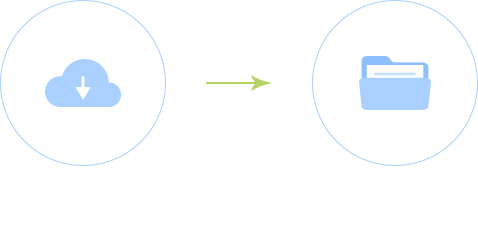

<div  class="container-fluid am-cf" ng-controller="QuestionsController">
    <div class="row">
        <div class="am-cf am-padding am-padding-bottom-0">
            <div class="am-fl am-cf"><strong class="am-text-primary am-text-lg">添加试题</strong></div>
        </div>

        <hr>
        <div class="am-g">
            <div class="am-u-sm-6" style="padding: 0;">
                <div ui-sref="admin.userAdd.add" ng-click="singleOrBatch(isSingle)" ng-class="{'titleTrue':isSingle , 'titleFalse':!isSingle }">
                    手动录入
                </div>
            </div>
            <div class="am-u-sm-6" style="padding: 0;">
                <div ui-sref="admin.userAdd.batch" ng-click="singleOrBatch(isBatch)" ng-class="{'titleTrue':isBatch, 'titleFalse':!isBatch }">
                    批量录入
                </div>
            </div>

        </div>

        <div class="am-g" ng-show="isBatch">
            <div class="am-u-sm-12">
                
            </div>

            <div class="am-u-sm-6">
                <a href="../excel/user_add_template_down.xls">
                    <button  type="button"
                             class="am-btn am-btn-primary tpl-btn-bg-color-success "
                             style="margin-left: 60%;height: 36px;width: 100px;">下载模板
                    </button>
                </a>
            </div>
            <div class="am-u-sm-6">
                <button ng-click="fileOpen()"
                        type='button'
                        class='am-btn am-btn-primary tpl-btn-bg-color-success'
                        style="margin-left: 15%;height: 36px;width: 100px;" >上传excel</button>
                <input id="btn_file" type="file"   style="display: none;"/>
            </div>

        </div>

        <div class="am-g" ng-show="isSingle">
            <div id="search" class="am-u-sm-4">
                <div class="am-dropdown dropdown" style="padding-top:10px;">
                    <div class="am-form-group am-form-icon" style="margin: 0">
                        <i class="am-icon-search"></i>
                        <input ng-model-options="{ debounce: 300}" ng-model="searchWord" type="text" class="am-form-field am-dropdown-toggle" placeholder="搜索题库" data-am-dropdown-toggle>
                    </div>
                    <ul class="am-dropdown-content">
                        <li ng-repeat="q in questionBank"><a href="#" ng-click="optionQuestionBank(q)">{{q.question_bank_name}}</a></li>
                        <li ng-if="questionBank.length==0" class="am-disabled"><a href="#">不好意思,要不换个姿势看世界？_？</a></li>
                    </ul>
                </div>
            </div>

            <div id="questionType" class="am-u-sm-4">
                试题类型 <div class="am-dropdown dropdown" style="padding:10px 15px">
                <button  class="am-btn am-btn-primary am-dropdown-toggle" data-am-dropdown-toggle>{{questionType==1?'单选题':questionType==2?'判断题':'问答题'}}&nbsp;&nbsp;<span class="am-icon-caret-down"></span></button>
                <ul class="am-dropdown-content">
                    <li><a href="#" ng-click="optionQuestionType(1)">单选题</a></li>
                    <li><a href="#" ng-click="optionQuestionType(2)">判断题</a></li>
                    <li><a href="#" ng-click="optionQuestionType(3)">问答题</a></li>
                </ul>
            </div>
            </div>

            <div  class="am-u-sm-4">
                试题难度 <div class="am-dropdown dropdown" style="padding:10px 15px">
                <button  class="am-btn am-btn-primary am-dropdown-toggle" data-am-dropdown-toggle>{{questionDegree==1?'简单':questionDegree==2?'一般':'困难'}}&nbsp;&nbsp;<span class="am-icon-caret-down"></span></button>
                <ul class="am-dropdown-content">
                    <li><a href="#" ng-click="optionQuestionDegree(1)">简单</a></li>
                    <li><a href="#" ng-click="optionQuestionDegree(2)">一般</a></li>
                    <li><a href="#" ng-click="optionQuestionDegree(3)">困难</a></li>
                </ul>
            </div>
            </div>
            <div class="am-u-sm-12" style="background-color: #f3f3f5">
                <br>
                <button type="button" style="background-color: #a9b3bf;color: #FFF" class="am-btn am-btn-default am-round am-btn-xs">题干</button><small style="font-size:12px;color: #A9B3BF"> 这里填写题目描述</small>
            </div>
            <div class="am-u-sm-12" style="background-color: #f3f3f5">
                <textarea ng-model="question_title" style="width: 90%;margin: 20px 20px 20px 50px"  rows="6" id="title" title=""></textarea>
            </div>

            <div class="am-u-sm-12" style="background-color: #f3f3f5" ng-if="questionType==2">
                <br>
                <button type="button" style="background-color: #a9b3bf;color: #FFF" class="am-btn am-btn-default am-round am-btn-xs">选项</button><small style="font-size:12px;color: #A9B3BF">选择正确或者错误（默认正确）</small>
                <br>
            </div>

            <div class="am-u-sm-12" style="background-color: #f3f3f5" ng-if="questionType==2">
                <br>
                <button ng-click="optionTF(true)" type="button" class="am-btn am-btn-default am-round" ng-class="{'am-active':tfAnswer}">正确</button>
                <button ng-click="optionTF(false)" type="button" class="am-btn am-btn-default am-round" ng-class="{'am-active':!tfAnswer}">错误</button>
                <br>
            </div>


            <div class="am-u-sm-12" style="background-color: #f3f3f5" ng-if="questionType==1">
                <br>
                <button type="button" style="background-color: #a9b3bf;color: #FFF" class="am-btn am-btn-default am-round am-btn-xs">选项</button><small style="font-size:12px;color: #A9B3BF"> 单选题的选项范围从2到8</small>
                <br>
            </div>
            <div class="am-u-sm-12" style="background-color: #f3f3f5" ng-if="questionType==1" ng-repeat="o in questionOptions">
                <input ng-click="selectTrueOption($index)"  ng-model="o.isTrue"  type="checkbox" style="margin: 4px 0 0 20px"> <input ng-model="o.content" style="width: 90%;margin: 20px 20px 20px 10px" type="text" class="" id="doc-ipt-email-1" >
                <a ng-click="deleteQuestionOption($index)" ng-if="$index>1"  class="am-close am-close-alt am-close-spin am-icon-times" data-am-modal-close></a>
            </div>

            <div class="am-u-sm-12" style="background-color: #f3f3f5" ng-if="questionType==1">
                <button  ng-click="addQuestionOption()" type="button" class="am-btn am-btn-default am-radius" style="margin-left:9%;width:80%"><span class="am-icon-plus-circle"></span>&nbsp;添加一个选项</button>
            </div>

            <div class="am-u-sm-12" style="background-color: #f3f3f5">
                <br>
                <button type="button" style="background-color: #a9b3bf;color: #FFF" class="am-btn am-btn-default am-round am-btn-xs">解析</button><small style="font-size:12px;color: #A9B3BF"> 这里填写题目解析</small>
            </div>
            <div class="am-u-sm-12" style="background-color: #f3f3f5">
                <textarea ng-model="question_analysis" style="width: 90%;margin: 20px 20px 20px 50px"  rows="6"  title=""></textarea>
            </div>

            <div  class="am-u-sm-12" align="center" style="background-color: #f3f3f5">
                <button ng-click="reset()" style="padding-left:25px;padding-right:25px;margin-right: 20px" type="button" class="am-btn am-btn-default am-round">重置</button>
                <button ng-click="addQuestion()" style="padding-left:25px;padding-right:25px;margin-left: 20px" type="button" class="am-btn am-btn-secondary am-round">录入</button>
            </div>
        </div>
    </div>

</div>


